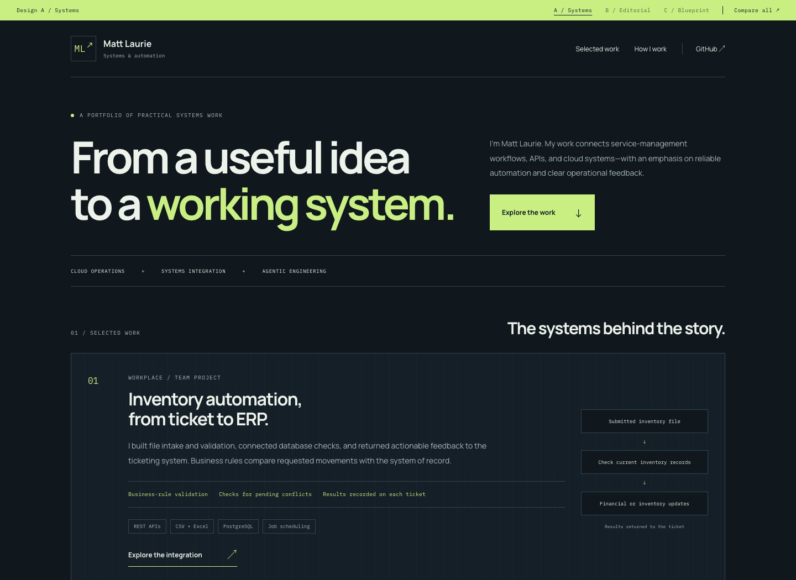
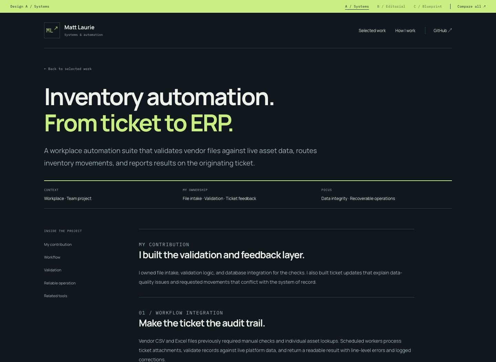
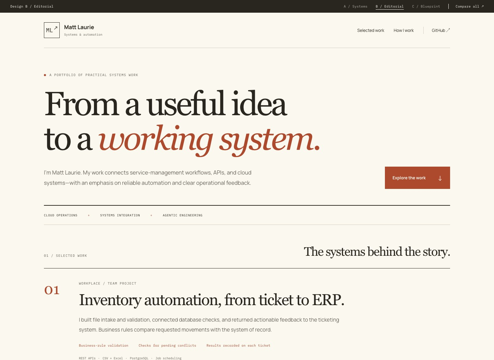
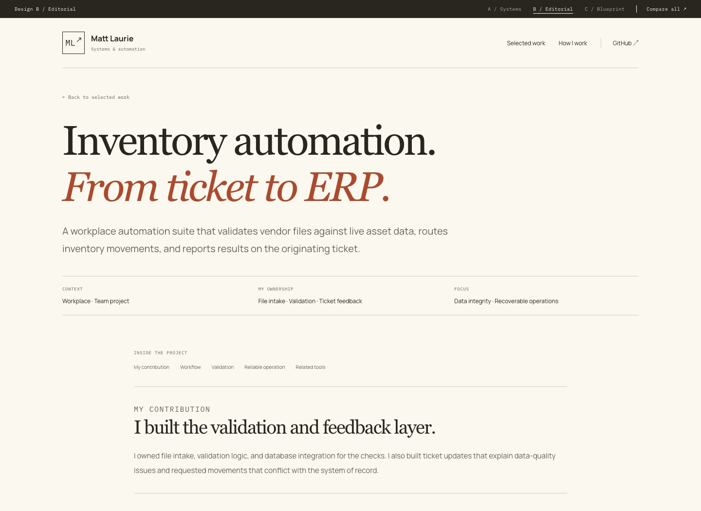
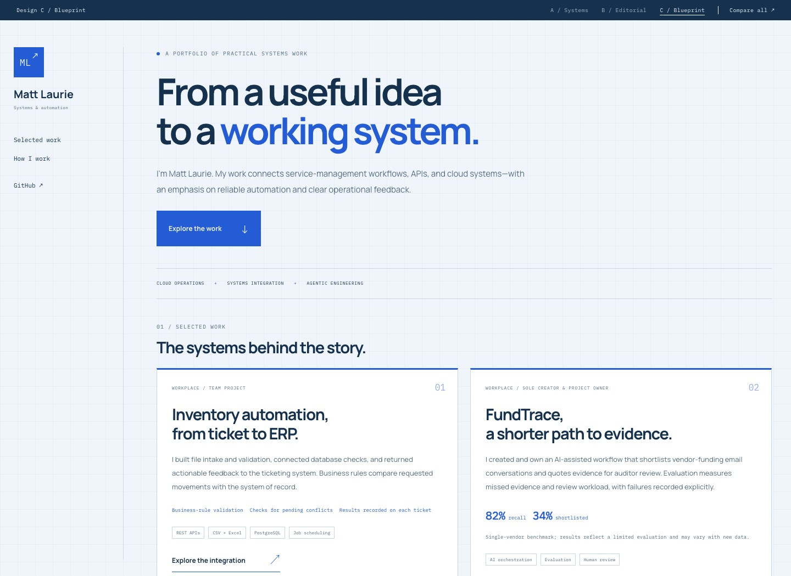
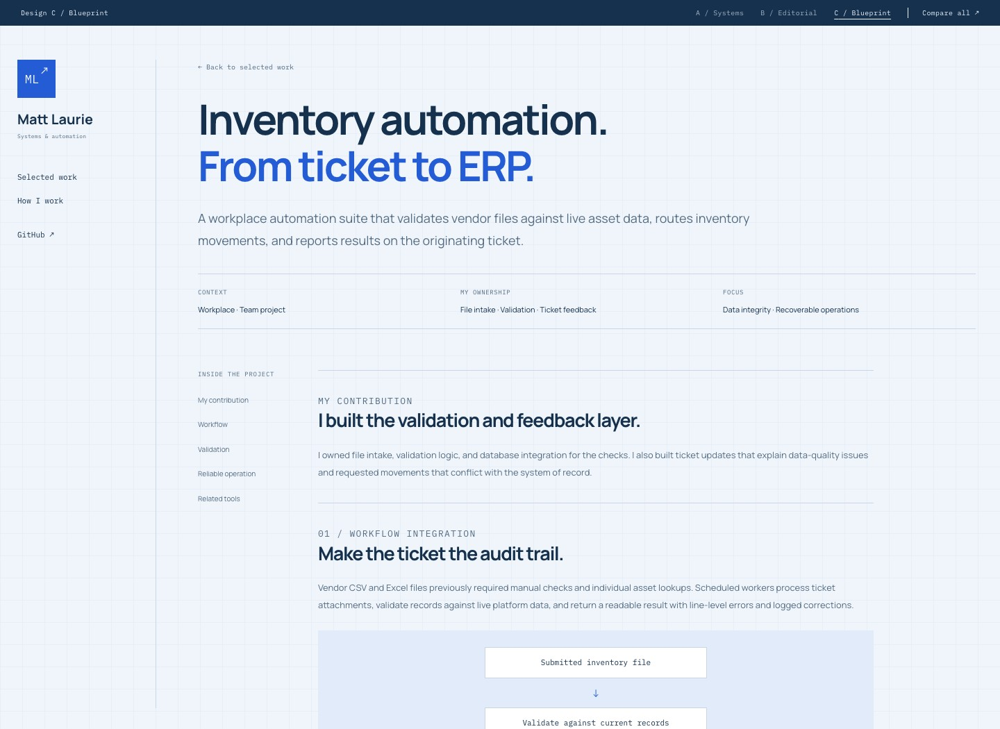

A / Homepage

A / Case study

A / Technical & direct
Systems
Graphite, lime, and precise technical details. A split introduction and structured project panels put systems work in focus.
Explore the designA / B / C
Compare the same project content through three different layouts, type treatments, and visual hierarchies. Each preview includes the homepage and all three case studies.
A / Homepage

A / Case study

A / Technical & direct
Graphite, lime, and precise technical details. A split introduction and structured project panels put systems work in focus.
Explore the designB / Homepage

B / Case study

B / Selected design
Warm paper, serif headlines, and rust accents. A spacious project journal gives ownership and technical decisions room to read.
Explore the designC / Homepage

C / Case study

C / Structured & compact
Navy, blue, and a subtle grid. A persistent identity rail and compact project index make the breadth of the work easy to scan.
Explore the designAll three directions use the existing project claims, ownership statements, screenshots, and benchmark context. Use the comparison bar inside any preview to switch designs on the same page.